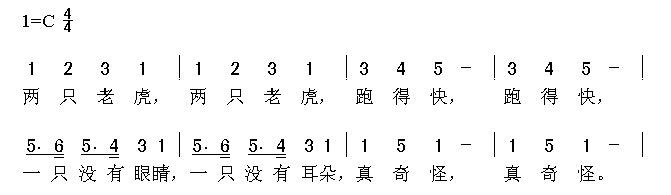
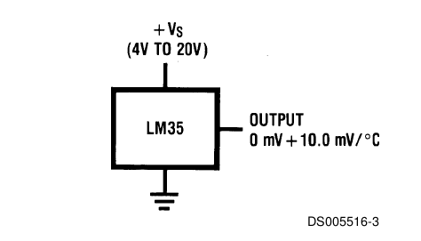
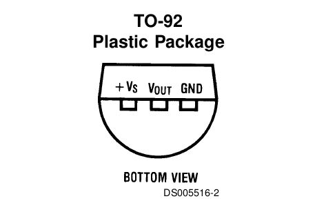
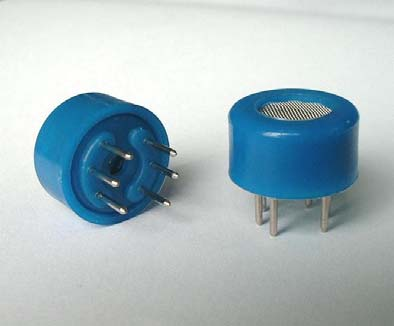
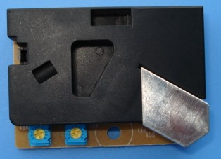
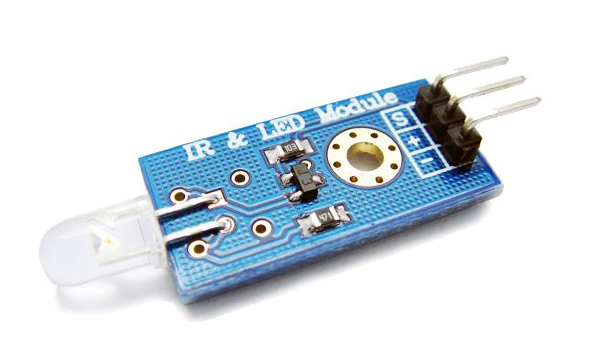
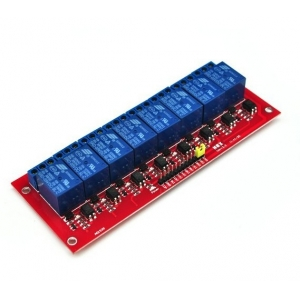

ruby arduino hacking
Ruby Conf China 2012
By @quakewang
About Arduino
Arduino is an open-source electronics prototyping platform based on flexible, easy-to-use hardware and software. It's intended for artists, designers, hobbyists, and anyone interested in creating interactive objects or environments.
Arduino Hello World
flashing LED

Arduino Hello World
flashing LED
void setup() {
pinMode(13, OUTPUT);
}
void loop() {
digitalWrite(13, HIGH);
delay(1000);
digitalWrite(13, LOW);
delay(1000);
}
Why Ruby
... Because ...
- I like ruby
- Coding for fun
- Z-Turn
RAD
Ruby Arduino Development
DSL, ruby2c
RAD Example
gem install rad
rad my_sketch
class MySketch < ArduinoSketch
output_pin 13, :as => :led
def loop
blink led, 1000
end
end
rake make:upload
RAD Drawbacks
Only Support Ruby 1.8
Inactive development
Write - Upload - Run
Serial Communication
- Arduino as INPUT/OUTPUT device
- Run complex logic / controller code on PC (internet, database, etc)
- Upload once, run multiple time
Ruby Serialport Gem
http://ruby-serialport.rubyforge.org/
Ruby code
require 'rubygems'
require 'serialport'
sp = SerialPort.new "/dev/ttyUSB0", 9600
sp.write "abcd"
Ruby Serialport Gem
Arduino code
int b = 0;
void setup() {
Serial.begin(9600);
}
void loop() {
if (Serial.available() > 0) {
b = Serial.read();
Serial.print("I received: ");
Serial.println(b, DEC);
}
}
Protocol
- 1 2 3 4 5 6 7
- * => 1
- . => 1 plus 1/2
- _ => 1/2
- - => 2
- 跑得快 => 3*4*5-
Protocol
Ruby Code
require 'rubygems'
require 'serialport'
sp = SerialPort.new "/dev/ttyUSB0", 9600
string = "12311231345-345-5.6_5.4_315.6_5.4_31151-151-0"
string.scan(/\d[_|\-|\.]?/) do |i|
sp.write i.ljust(2, '*')
end
Protocol
Arduino Code
c = Serial.read();
if (c == '-') {
delay(1600);
} else if (c == '.') {
delay(600);
} else if (c == '*') {
delay(400);
} else if (c == '_') {
delay(200);
} else if (c == '0') {
noTone(8);
} else {
tone(8, pitches[c - '0']);
}
Firmata
- Firmata is a generic protocol for communicating with microcontrollers from software on a host computer
- Arduino StandardFirmata example code
- Ruby Firmata: https://github.com/shokai/arduino_firmata
LM35 Temperatur Sensor
http://www.ti.com/lit/ds/symlink/lm35.pdf  Sinatra + Arduino
require 'rubygems'
require 'sinatra'
require 'arduino_firmata'
arduino = ArduinoFirmata.connect
get '/' do
analog = arduino.analog_read(0)
temperature = analog * 100 * 5.0 / 1023
"Now Temperature: #{temperature.round(2)}"
end
Personal Weather Station
- MG811 CO2 Sensor
 - DSM501A Dust Sensor

Control Electric
With Infrared Ray
Control Electric
With Infrared Ray
require 'rubygems'
require 'sinatra'
require 'serialport'
sp = SerialPort.new "/dev/ttyUSB0", 9600
get '/switch' do
sp.write("1")
"<a href='/switch'>switch</a>"
end
Control Electric
With Relay

- Queryable state
- Reliable
- Inexpensive
Continuous Integration
Using Lava Lamps for Continuous Integration

Tweet-a-Pot
Twitter Enabled Coffee Pot
http://www.instructables.com/id/Tweet-a-Pot-Twitter-Enabled-Coffee-Pot/
Mini PC
Raspberry pi

Mini PC
Ubuntu on MK802
Trying...